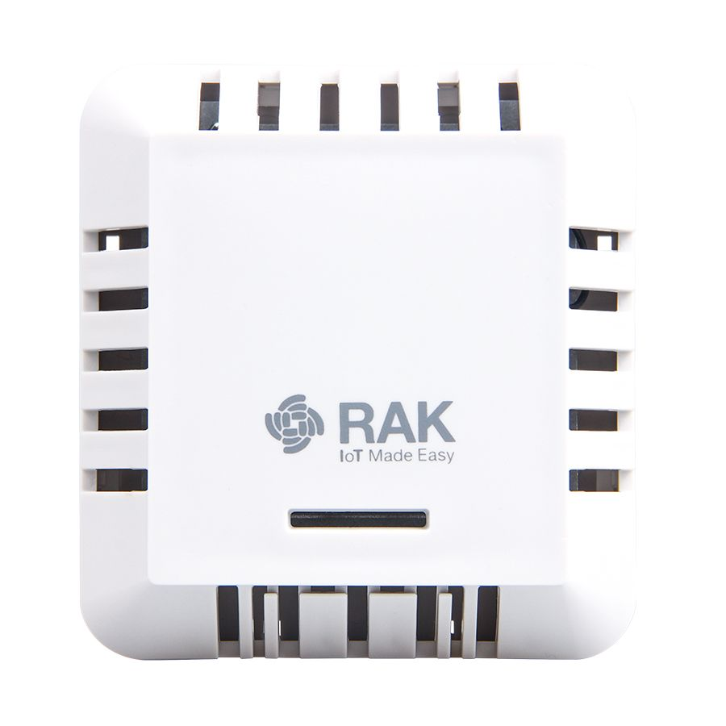

RAK7204 LoRa Environmental Sensor
Outdated: this section documents The Things Network V2, which is no longer maintained. See the documentation for The Things Stack V3, or browse the V2 docs index.

Product Background #
The RAK7204 LoRa Environmental Sensor is a LoRaWAN node with integrated environmental sensors. The high-precision environmental sensors, can measure changes in temperature, humidity, gas pressure and provide an indoor air quality index. All the accumulated data can be send to a LoRaWAN Gateway in order for it to be forwarded to the Cloud.
The environmental sensors, LoRa transceiver module, LoRa antenna, and the battery are fitted in a 90 mm x 85 mm x 34 mm sized housing. These small dimensions allow for installation in tight spaces or ones that require the sensor to have a minimal impact on the overall feel of the surrounding environment. The housing adopts a hollow, permeable design to facilitate air flow in order to more accurately detect the environmental changes.
Product Features #
- Measurement of a variety of environmental parameters: Temperature, Humidity, Gas Pressure and Indoor Air Quality (IAQ)
- BOSCH BME680 Integrated Environmental Unit
- LoRaWAN 1.0.2 fully compliant
- Low power operation and standby current of less than 15 uA
- Adjustable sampling and transmission interval.
- Comes with a replaceable 3500 mAh high capacity lithium battery
- Real time battery status monitoring.
- Battery life of more than 2 years (At 15 minute data transmission interval)
- Compact in size, easy to install and maintain.